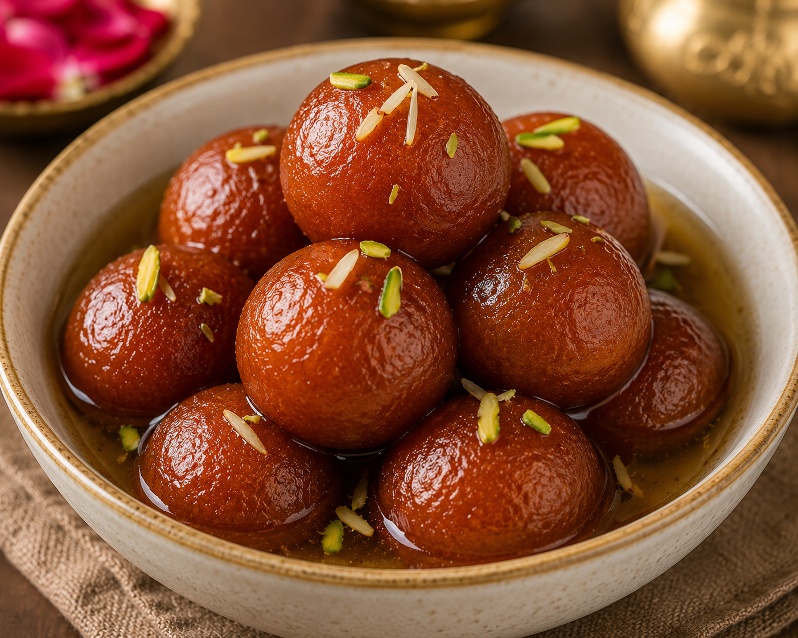

Gulab Jamun
Gulab jamun is a soft and syrupy sweet made from milk solids, flour, and a little baking agent, deep-fried until
golden brown. It is then soaked in fragrant sugar syrup flavored with cardamom and rose water. Its
melt-in-the-mouth texture and rich sweetness make it one of the most loved desserts in South Asia.
Go Back